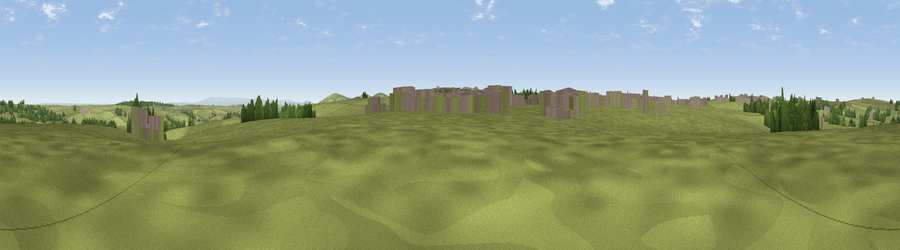

Viewpoint near Trevivian
#32463 in England · top 62% of its area beats it · near TrevivianThe view, rendered

A 360° render of this exact spot computed from the terrain model, tree cover and land cover — summer colours, afternoon light, calibrated against photographs of famous viewpoints. Real trees, hedges and buildings will differ in detail.
The panorama
Grey silhouette: terrain skyline in each direction (720 bearings, Earth curvature and refraction included). Dashed green: skyline with trees (+15 m) and buildings (+8 m) as obstacles. Blue strip: how far the ground is visible on each bearing.
Where the view opens
Wedge length = distance to the farthest visible ground on that bearing (vegetation-aware). Rings at 10, 25 and 50 km.
What fills the view
90% grassland · 4% woodland · 3% built-up · 2% cropland
Angular shares of the visible panorama (visual magnitude), not map area. Landscape diversity 0.18 (0–1 Shannon).
Key numbers
More beautiful places nearby
The staircase of upgrades: each row has a higher view potential than everything closer. Driving times are estimates from straight-line distance, calibrated against real road routing — check an actual route before setting out.
| Place | Direction | Drive | Score |
|---|---|---|---|
| Viewpoint near Hallworthy | NE · 3 km | ~7 min | 50.8 |
| Showery Tor | S · 4 km | ~10 min | 73.3 |
| Little Rough Tor | S · 5 km | ~10 min | 73.7 |
| Rough Tor | S · 5 km | ~11 min | 76.5 |
| Viewpoint near Lesnewth | NW · 5 km | ~12 min | 78.1 |
| Viewpoint near Lesnewth | NW · 6 km | ~13 min | 82.6 |
| Viewpoint near Boscastle | WNW · 7 km | ~15 min | 85.2 |
| Viewpoint near Lesnewth | NNW · 8 km | ~17 min | 87.7 |
50.64011, -4.61173 · source: screening · position refined by local search. Computed location — check access rights before visiting.